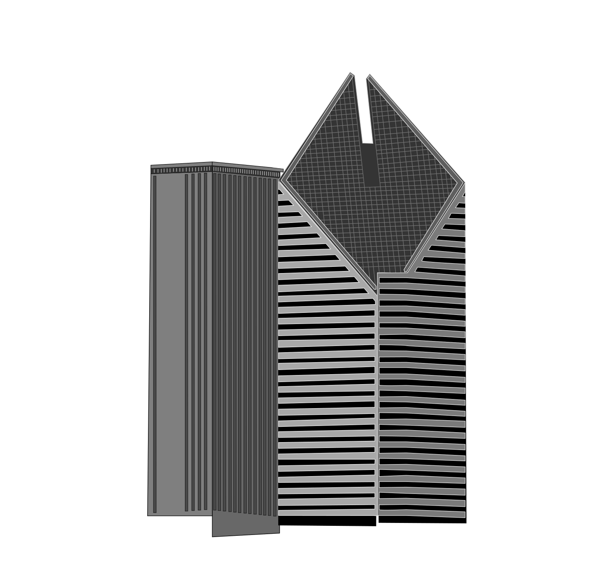

The starting view follows the SVG’s angle, proportions, and spacing. Orbit to explore Kemper’s vertical ribs and Crain’s diamond roof. Depth and hidden sides are approximate.
Camera moves only when you interact or start the turntable.
Chicago skyline / building study 02
Two neighbors, from the skyline’s point of view

The starting view follows the SVG’s angle, proportions, and spacing. Orbit to explore Kemper’s vertical ribs and Crain’s diamond roof. Depth and hidden sides are approximate.
Camera moves only when you interact or start the turntable.